Original de Carlos Domingo. Editado por Carmen Rodríguez y Jacinto Dávila. Universidad de Los Andes, Venezuela.
1. Considere un objeto elemento △ que puede tomarse en 3 formas: △ ▷ ▽ y un elemento □ que
puede tomarse en cuatro formas:
¿En cuántas formas diferentes puede tomarse uno cualquiera de estos elementos es decir un
elemento del conjunto: { △ , □ } ?
2. Esta solución es un caso particular de la regla de la suma:
“Si un objeto A puede tomarse en m formas y el objeto B en n formas entonces uno entre A ó B puede tomarse de formas”.
3. Considere el mismo ejemplo 1 pero ahora hay que tomar 2 objetos, el △ y el □.
¿En cuántas formas puedo tomarlos? (no interesa el orden, es decir △ □ es igual a □ △ ).
Sugerencia: observar el "árbol":
El número de formas es:
4. Esta solución es un caso particular de la regla del producto:
“Si un elemento A puede tomarse de m formas y el B de n formas entonces el par A y B puede tomarse en formas”.
5. Sean los conjuntos C1={A, B, C, D} C2={X, Y, Z}
¿Cuántas y cuáles son las duplas o pares que pueden construirse teniendo cada dupla un primer elemento de C1 y un segundo elemento de C2?
Considerar que el primer elemento puede tomarse en formas y el segundo en formas.
6. Construir el árbol:
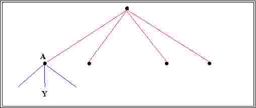
Duplas: AX,
Cantidad:
7. Sean r conjuntos con n1, n2, ..., nr objetos respectivamente. El número de conjuntos diferentes con r elementos cada uno, conteniendo un elemento de cada conjunto será:
M = n1*
Demostrarlo por inducción:
8. Si tenemos k conjuntos iguales de n elementos cada uno el número de k-tuplas distintas que
pueden formarse extrayendo un elemento de cada uno es:
9. Demostrar, usando esta fórmula que hay 1000 números de tres cifras o menos.
10. a) Calcular, basándose en la fórmula dada en 8, ¿cuántos subconjuntos diferentes pueden
formarse en un conjunto C de n elementos?. Nota: Los subconjuntos podrían formarse considerando el C={a1, a2, ... , an} y luego los
subconjuntos {a1} ... {a1, a2}, {a2, a3}, ... , {an-1, an}, .. {a1,..,an}
b) Demostrar la misma fórmula por inducción.
11. ¿Cuántos números binarios de n cifras hay? (Número binario es el que se escribe con sólo dos cifras 0 y 1 así: 0, 1, ..10, ...11, ....100, .....101, ......110, etc)
12. ¿Cómo resolvería el problema 10 con el resultado del problema 11?
13. ¿Cuántas funciones diferentes f: A -> B pueden formarse si el dominio A tiene k valores y el rango B n valores?
Sigamos la respuesta que propone J. Rodríguez en el “Arte de Contar”: Digamos primero que f es una función de A en B y representemoslo así 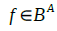 . Esta es una exageración notacional, porque
A y B son conjuntos, pero veremos que conviene para los resultados que siguen. Digamos ahora
que 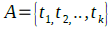 y 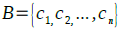 . “Una de las” f es puede representar como sigue:
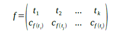
pareando la k-tupla de elementos de A con una selección particular (que determina la f) de elementos de B. Decimos ahora que:
f es una k-permutación o permutación(n,k) de los n elementos de B.
Proposición para probar:
Demostración: Sea (noten que esta no es ninguna de las anteriores, sino una nueva construcción, de nuevo exagerada, para referirnos al producto cartesiano múltiple del conjunto B consigo mismo), tal que:
La función auxiliar φ: 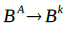 definida así:
es biyectiva y, por tanto, en virtud del principio de igualdad, conseguir 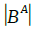 es igual que conseguir a .
Para encontrar todas esas k-tuplas (o k-uplas) formadas por elementos de B, basta con observar que existen n posibilidades de colocar un elemento de A en la primera componente, n en la segunda y así sucesivamente. De manera que se tiene:
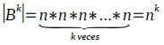
En conclusión (con la aplicación repetida del principio de igualdad):
Existen n^k :
13.1.- Funciones de A en B.
13.2.- permutaciones-k con repetición de los n elementos de B.
13.3.- k-tuplas formadas con elementos de B.
13.4.- Maneras de arreglar k objetos en n cajas.
13.5.- Palabras de longitud k formadas a partir de un alfabeto con los n símbolos en B.
14. Se llama permutación-m sin repetición o variación de n objetos distintos a cualquier selección ordenada de m objetos elegidos entre aquellos n.
Se puede indicar P(n,m) o
Por ejemplo si tenemos los 5 elementos {A, B, C, D, E} y tomamos las permutaciones-3 resultan:
ABC
ACB
BAC
BCA
CAB
CBA
ABD
ADB
ABE
BCD
BCE
CDE
(completar la lista en el orden sugerido)
En general el primer elemento puede elegirse en n formas diferentes (en el ejemplo son:).
El segundo puede elegirse en formas. Así que con m=2 podemos obtener
formas diferentes y quedan aún elementos. El tercero puede elegirse pues
de formas. Así que podemos formar grupos de 3 elementos.
Si elegimos m términos tendríamos:
= P(n,m) =
b) Por convención se define P(n,0) = 1 fórmula que no tiene ningún significado combinatorio.
c) Demostrar por inducción la fórmula P(n,m) (inducción sobre m).
d) Hacer un árbol para demostrar la fórmula anterior. Concretarse al ejemplo: {A,B,C,D,E} n=5 m=3.
e) Las permutaciones-n de n elementos se llaman simplemente permutaciones P(n,n)= P(n)=
f) La fórmula de P(n,m) puede escribirse : P(n,m) = n!/(n-m)!
Demostración:
15. Para muchos problemas de combinatoria es útil obtener fórmulas de recurrencia que permiten calcular números combinatorios en función de números análogos de orden inferior.
Consideramos como ejemplo nuevamente el cálculo de las P(n,m) (permutaciones de n elementos
tomados de a m cada vez).
Tomemos un elemento particular (digamos la letra A en el conjunto S = {A,E,I,O,U}).
Consideremos formadas las P(n,m) permutaciones. Cada permutación contiene o no cada elemento. Las que no lo contienen son en total: P().
En las que lo contienen tal elemento puede estar en las posiciones 1, 2, ... , m mientras los demás forman una permutación de elementos tomados de a . Así que las que lo contienen son en total . P()
Resulta entonces:
P(n,m)=
Esta es una fórmula de recurrencia que expresa P(n,m) en función de la misma función P para
valores menores de los argumentos.
Con esta fórmula pueden calcularse “por recurrencia” los valores de P(n,m) a partir de valores
iniciales. Se pone P(n,0)=1, y P(n,m)=0 si n'<'m.
Completar el cálculo según el cuadro siguiente (Vea, según la fórmula de recurrencia, como se
calcula el valor de cada cuadro en función de las superior
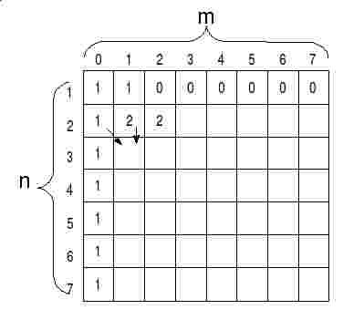
16- En particular las permutaciones de n elementos tomados de a n es P(n, n)
P(n,n)= + n .
o sea P(n) = n.
Esta fórmula de recurrencia define el “factorial” de n. Así que, como ya se vio,
P(n)=
Por ejemplo:
¿De cuántas maneras distintas podemos ordenar 10 libros en el estante de una biblioteca?
P() =
17- Se presenta a veces el problema de calcular permutaciones de n elementos tomados de a n, pero
algunos objetos son indistinguibles. Por ejemplo, en el caso de los 10 libros puede haber 3 copias de
un cierto libro, 2 de otro, 4 de otro y 1 de otro. Hay sólo cuatro clases de libros diferentes y por lo
tanto muchas de las permutaciones que antes consideramos diferentes son ahora idénticas.
Consideremos en general n elementos de los cuales hay m1 iguales entre sí, m2 iguales entre sí, ...
mr iguales entre sí,
(claro está que es: m1 + m2 + ... + mr = _________)
Para ver cuántas permutaciones distinguibles hay, consideremos que P sea este número.
Si los m1 elementos iguales entre sí se transforman en diferentes cada una de las P originaría
permutaciones y el número total de permutaciones (supuestos los m1 elementos
distintos) sería P..
Si ahora los m2 iguales se volvieran diferentes cada una de las últimas permutaciones originaría
y tendríamos en total P * m1! * . permutaciones.
Por último si todas llegaran a ser diferentes el número total de permutaciones sería:
P * m1! * m2! * ...
Pero este número total es el número de permutaciones de objetos diferentes
tomados todos los n. Vale pues .
Así que resulta:
P = P(n, m1, m2, ... mr)=
Por ejemplo: si en los 10 libros del ejemplo 16 hay 4 iguales, 3 iguales, 2 iguales y uno único el
número de permutaciones distinguibles entre ellos es
P =
18.Combinaciones: Se llama combinación de tamaño m de n elementos diferentes a cualquier conjunto de m elementos que se tomen de los n originales.
Dos de los conjuntos se consideran diferentes si difieren en qué elementos tienen. Si difieren sólo en el orden se los considera iguales.
El número de combinaciones de m elementos tomados de n se indica C(n,m).
Ejemplo:
Construir todas las combinaciones de tres vocales: N= {A, E, I, O, U}
AEI
AEO
AIO
EIO
En total hay C(5,3)= combinaciones.
¿Cuál es la diferencia con las permutaciones-m de n objetos?
19. La fórmula de las combinaciones se obtiene fácilmente por un razonamiento análogo al de 16.
Si en las combinaciones de tamaño m permutamos todos los objetos cada una origina permutaciones. Así que:
P(n,m)= C(n,m) *
De donde
C(n,m) = P(n,m)/P(m,m)=
20. Los números C(n,m) o bien 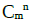 o bien se llaman números combinatorios y tienen una gran importancia en Estadística. Se escriben:
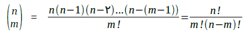
Se define C(n,0)=1 aunque esto no tiene un significado combinatorio.
Demostrar la notable propiedad de simetría:
_______________
1 Por si acaso, esta es una representación independiente del editor _______________
21- Se puede obtener una fórmula de recurrencia para las C(n,m). El razonamiento es análogo al visto en 15.
22- Con la fórmula de recurrencia se obtiene la siguiente tabla de los C(n,m) (teniendo en cuenta que C(1,0)=1 y C(n n)= 1)
Esta construcción se llama Rectángulo de Tartaglia o Triángulo de Pascal. En realidad era conocido antes de esos por el poeta y algebrista iraní Omar Khayam (año 1100 dc).
23- Además de las reglas de suma y producto y las fórmulas de recurrencia hay otro poderoso artefacto para resolver problemas de combinatoria. Son las funciones generatrices.
Se llaman así ciertas funciones que se expresan como una suma de términos polinómicos cuyos coeficientes son los valores del problema combinatorio que interesa.
Tales funciones generatrices facilitan la obtención de relaciones importantes entre tales números combinatorios.
24- El ejemplo más común de función generatriz es la potencia n-ésima de un binomio. Sea el producto de n binomios:
Para calcularlo, según la ley distributiva, debemos multiplicar cada término de uno de los binomios por todos los términos de los otros. Un término cualquiera así obtenido sería por ejemplo:
a b a a b b a b a a a ... ba
donde hemos tomado el a del primer binomio, el b del segundo, el a del tercero, el a del cuarto etc,
habiendo factores en total.
Todos los términos que así se obtienen serán diferentes pero muchos sólo difieren en el orden de los factores, así que por su valor deben considerarse .
Tomemos un término con r factores b. Tendrá factores a. Así que su forma será:
a * b
¿Cuántos de estos factores habrá?
Vemos que hay exactamente tantos como las diferentes maneras en que podemos tomar r factores b de los binomios diferentes. Es decir, su número será . Por lo tanto si en el desarrollo de se agrupan los términos 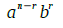 y se suman, se obtiene
Por eso la potencia puede expresarse:
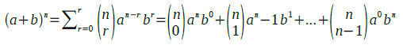
Consideremos el caso a=1 b=x:
Esta función , se llama función generadora de los números combinatorios 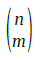
25- Demostrar que
26- Demostrar que
27- Partiendo de la identidad demostrar que
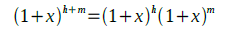 y escribirla para m+h=7, r=3.
Esta es la llamada convolución Chu-Vandermonde. En “Concrete Mathematics” de Graham et al se le da una interpretación combinatoria (que no sustituye la demostración que se pide): “Del lado izquierdo de la ecuación se cuenta el número de maneras de escoger r personas entre m mujeres y n hombres, digamos. Entonces, del lado derecho, cada término de la suma es el número de maneras de escoger k de las mujeres y n-k de los hombres. Al sumar sobre todos los k se cuenta cada posibilidad exactamente una vez”.
Fin del documento sobre Combinatoria. Licencia pendiente.


 (noten que esta no es ninguna de las anteriores, sino una nueva construcción, de nuevo exagerada, para referirnos al producto cartesiano múltiple del conjunto B consigo mismo), tal que:
(noten que esta no es ninguna de las anteriores, sino una nueva construcción, de nuevo exagerada, para referirnos al producto cartesiano múltiple del conjunto B consigo mismo), tal que:

 .
. formadas por elementos de B, basta con observar que existen n posibilidades de colocar un elemento de A en la primera componente, n en la segunda y así sucesivamente. De manera que se tiene:
formadas por elementos de B, basta con observar que existen n posibilidades de colocar un elemento de A en la primera componente, n en la segunda y así sucesivamente. De manera que se tiene:
 se llaman números combinatorios y tienen una gran importancia en Estadística. Se escriben:
se llaman números combinatorios y tienen una gran importancia en Estadística. Se escriben:
.png)

 se agrupan los términos 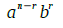 y se suman, se obtiene
se agrupan los términos 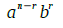 y se suman, se obtiene 
 , se llama función generadora de los números combinatorios 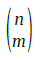
, se llama función generadora de los números combinatorios 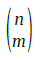

 demostrar que
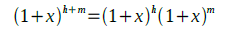 y escribirla para m+h=7, r=3.
demostrar que
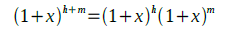 y escribirla para m+h=7, r=3.